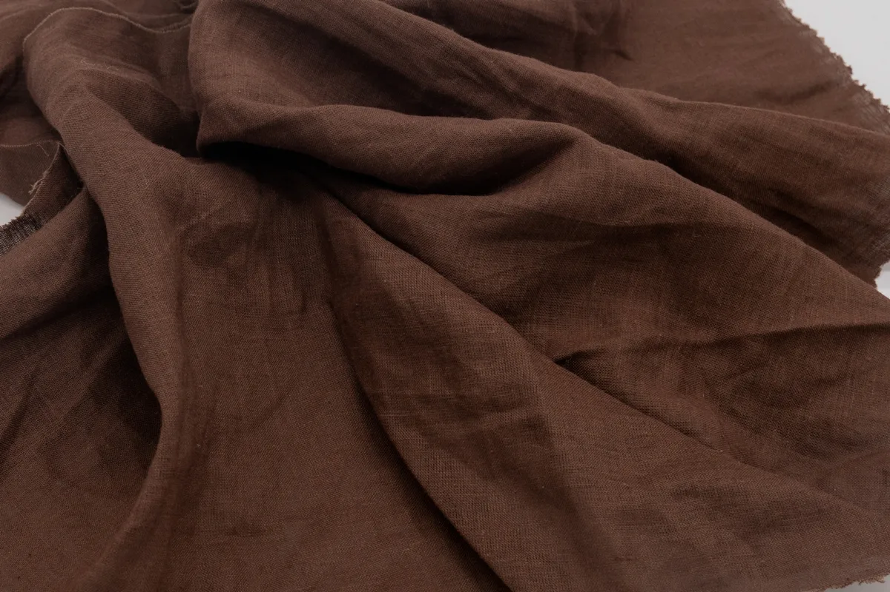
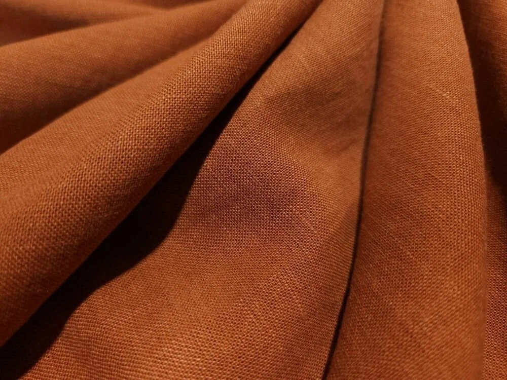

Батист

Тонкая ткань с усадкой до 5% нерастяжимая.
| Плотность: | 91-99 г/м2 |
| Состав: | 100% хлопок |
| Ширина: | 145 см |
Фланель

Мягкая бархатистая ткань с усадкой до 10% нерастяжимая.
| Плотность: | 150 г/м2 |
| Состав: | 100% хлопок |
| Ширина: | 145 см |
Фуле

Плотная практичная ткань с усадкой до 5% нерастяжимая.
| Плотность: | 152 г/м2 |
| Состав: | 100% хлопок |
| Ширина: | 145 см |
Крапива
Экологичная, послушная и плотная ткань с усадкой 3-5% нерастяжимая.
| Плотность: | 230 г/м2 |
| Состав: | 100% крапива, сорт "Рами" |
| Ширина: | 140 см |
Лён с вискозой
Смесовая ткань с усадкой до 10% меньше мнется, мягче, более упругая.
| Плотность: | 170 г/м2 |
| Состав: | 55% лён + 45% вискоза |
| Ширина: | 138 см |
Флис
Прочная износостойкая ткань со средней растяжимостью без усадки
| Плотность: | 340 г/м2 |
| Состав: | 94% полиэстер + 6% эластан |
| Ширина: | 188-190 см |
Термополотно
Сверхпрочное акриловое волокно со средней растяжимостью без усадки.
| Плотность: | 270 г/м2 |
| Состав: | 90% полиэстер + 10% эластан |
| Ширина: | 185 см |
Стеганая ткань
Односторонняя курточная ткань с толщиной утеплителя 1-1.4 см.
| Плотность: | 250 г/м2 |
| Состав: | 100% полиэстер |
| Ширина: | 143 см |